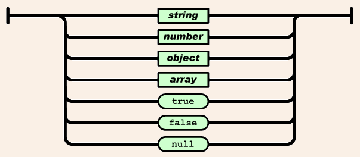

(slider framework : reveal.js)
JSON (JavaScript Object Notation)
un format simple d' échange de données (lightweight)
JSON est basé sur un sous-ensemble de JavaScript
(JavaScript Programming Language, Standard
ECMA-262 3rd Edition - December 1999)
JSON est basé sur 2 structures:
Dans la majorité des langages, il est représenté sous forme d'objet, d'enregistrement (record, struct, agrégat) ou de tableau asssociatif (dictionary, hash table, keyed list, associative array).
Dans la plupart des langages, représentée par un tableau (array) ou une collection indicée (vecteur, liste ou séquence).
{
"menu": {
"id": "file",
"value": "File",
"popup": {
"menuitem": [
{ "value": "New", "onclick": "CreateNewDoc()" },
{ "value": "Open", "onclick": "OpenDoc()" },
{ "value": "Close", "onclick": "CloseDoc()" }
]
}
}
}
menu:
id: file
value: File
popup:
menuitem:
value: New
onclick: CreateNewDoc()
menuitem:
value: Open
onclick: OpenDoc()
menuitem:
value: Close
onclick: CloseDoc()
Plusieurs structurations possibles, selon que l'on joue sur les attributs ou non
Un objet est vue comme un sensemble de couples nom/valeur.
Un tableau (array) est une collection ordonnée de valeurs.
Une valeur peut être une string entre double quotes, un nombre, true, false, null, un objet ou un tableau. Ces structures peuvent être emboitées.
Encode (pour retourner du json au client)
$data = array('a' => 'apple', 'b' => 'banana');
header('Content-Type: application/json');
echo json_encode($data, JSON_PRETTY_PRINT);
Donnera
{
"a": "apple",
"b": "banana"
}
decode (pour traduire du json en php)
$json = '{"a":1,"b":2,"c":3,"d":4,"e":5}';
var_dump(json_decode($json));
Donne :
object(stdClass)#1 (5) {
["a"] => int(1)
["b"] => int(2)
["c"] => int(3)
["d"] => int(4)
["e"] => int(5)
}
Pour une traduction en tableau associatif, on précisera un second
paramètre à
var_dump(json_decode($json, true));
array(5) {
["a"] => int(1)
["b"] => int(2)
["c"] => int(3)
["d"] => int(4)
["e"] => int(5)
}
Les navigateurs incluent des fonctions JS pour encoder/decoder du JSON
// http://stackoverflow.com/questions/10919965/\
// how-do-i-encode-a-javascript-object-as-json
// To encode an object (This produces a string)
var json_str = JSON.stringify(myobject);
// To decode (This produces an object)
var obj = JSON.parse(json_str);
Note that only valid JSON data will be encoded. For example:
var obj = {'foo': 1, 'bar': (function (x) { return x; })}
JSON.stringify(obj) // --> "{\"foo\":1}"
Valid JSON types are: objects, strings, numbers, arrays, true, false, and null.
(asynchronous JavaScript and XML)
Une technologie qui exploite DOM et JavaScript afin de modifier l'information présentée dans le navigateur :
because you can:
(https://www.w3schools.com/xml/ajax_intro.asp)
Exemple de traitement avec jquery
$.ajax({
url : "jsonpartitionne.php",
type : 'POST',
cache : false,
dataType : 'json',
data : {"cardGrp" : cardG, "personnes" : liste },
success : function(json, statut) {
doSomethingWith(json);
console.log(json);
}
});
La réponse reçue (paramètre nommé 'json' ici) sera un objet JS (à cause de la valeur du paramètre dataType)
TypeScript est un langage open source qui étend JavaScript.
Ses atouts sont
L'Objet est, avec le tableau, la structure principale de JS.
Un objet peut être
obj = { login :"foo", pw: "bar"} Interface User { login: string, pw: string }